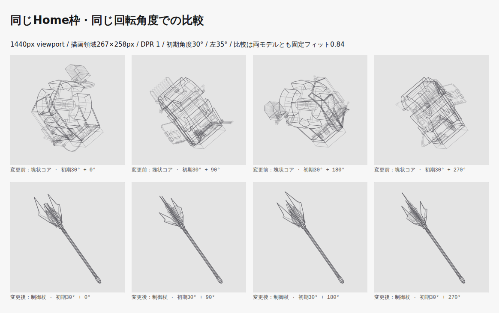
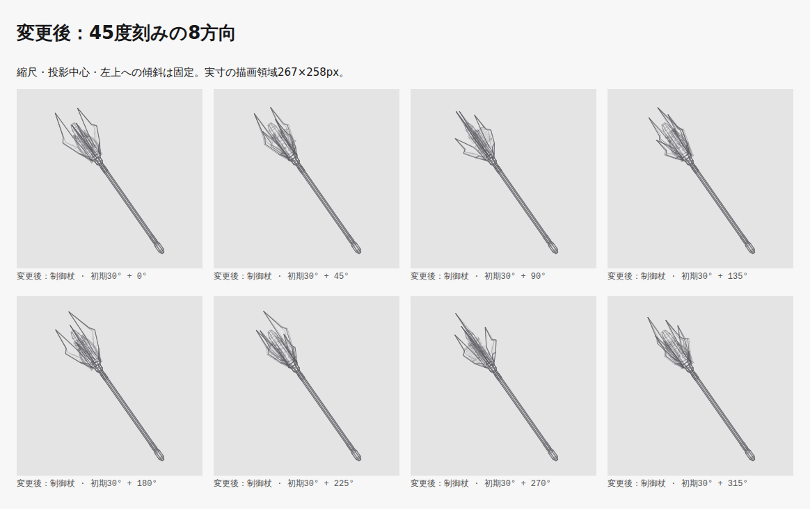
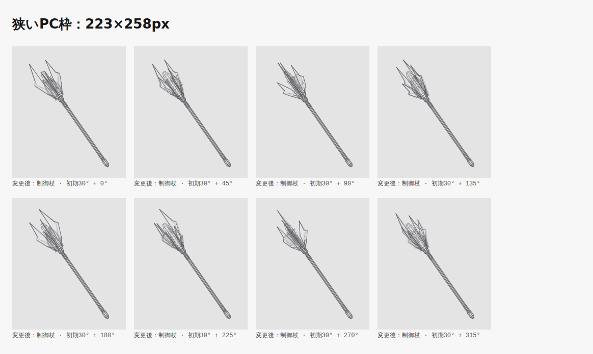
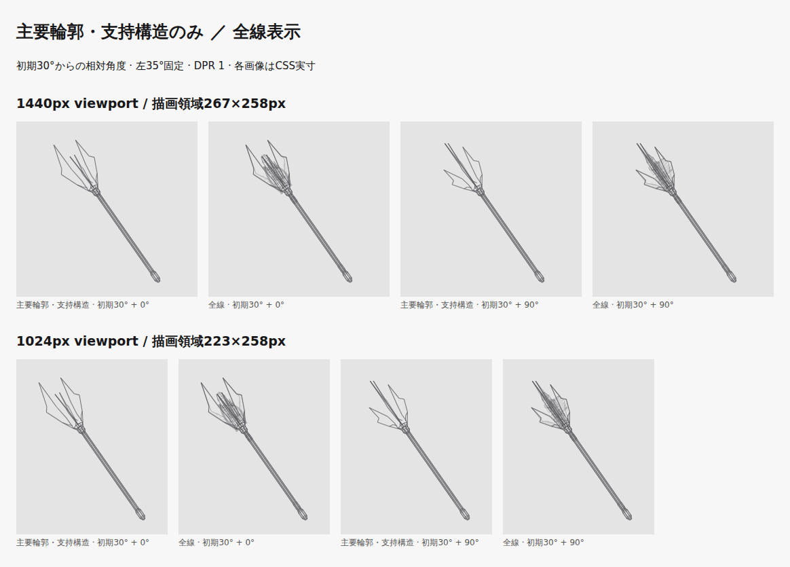
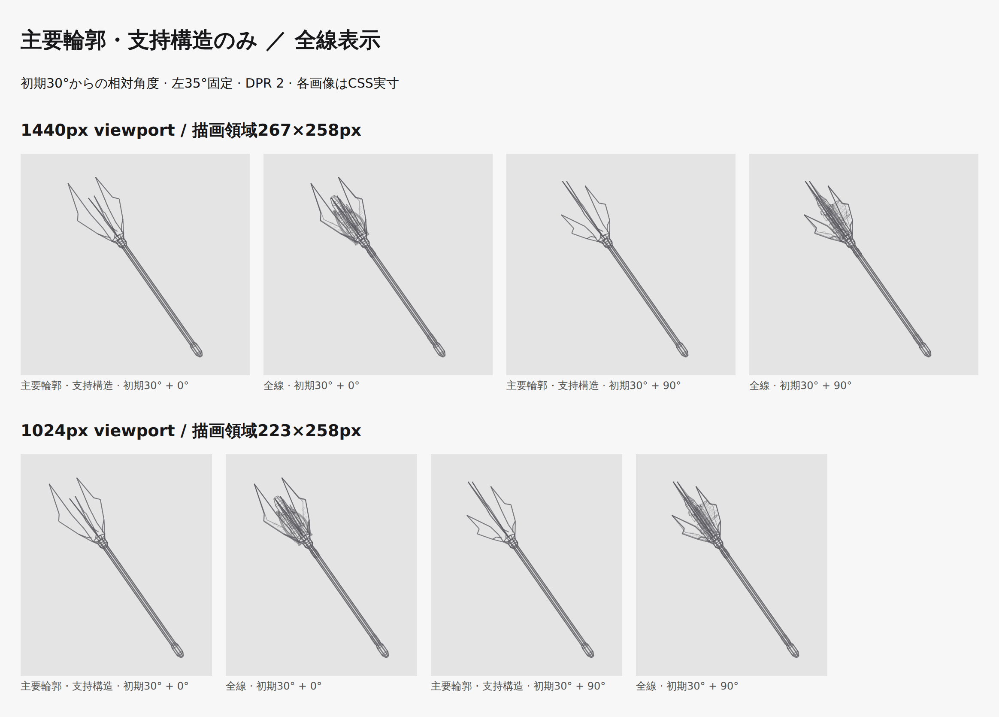
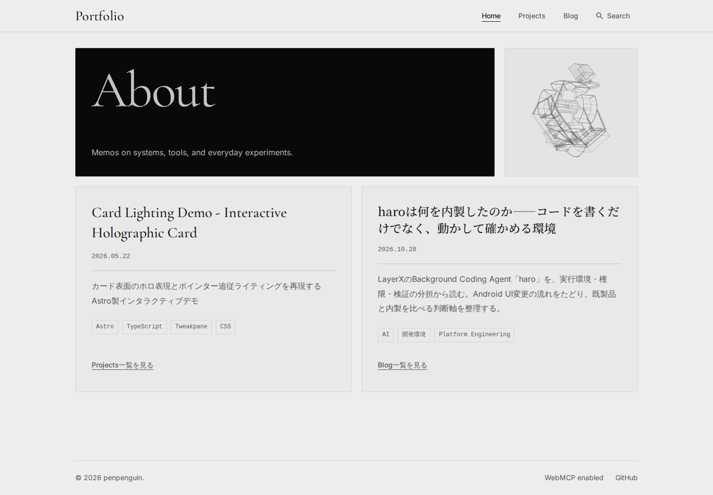
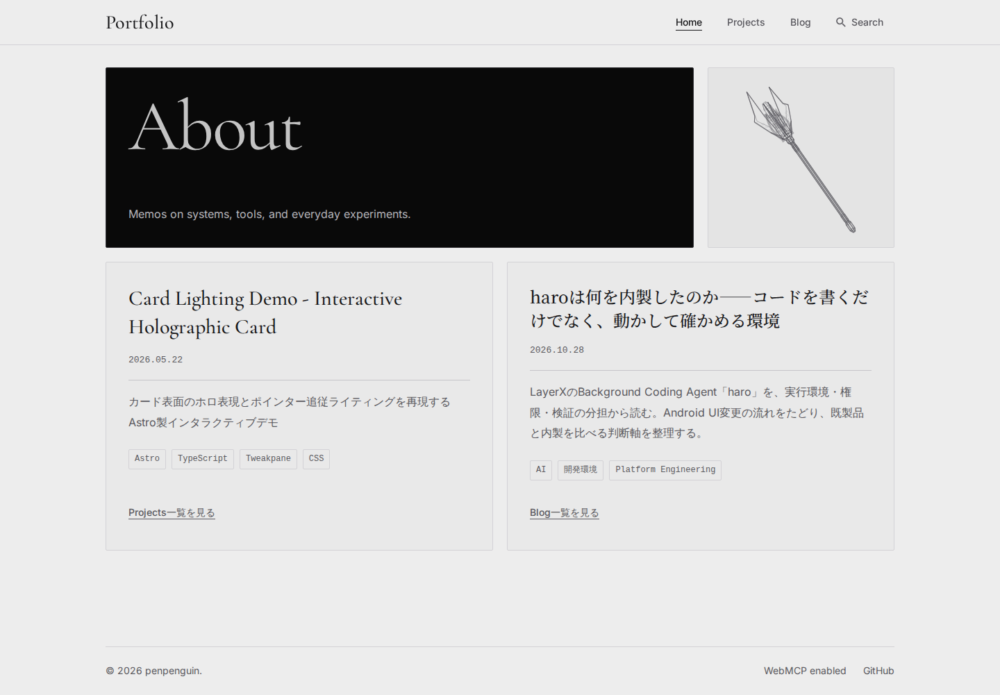
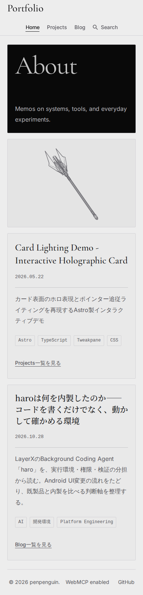
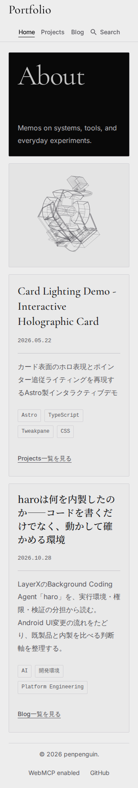
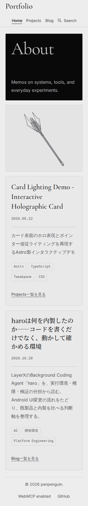

鋭い先端と長い軸を持つSFインダストリアル制御杖
PR #170の塊状演算コアを、制御杖へ置き換えました。外殻の尖り・厚みと先端内部の密度を残し、柄中央は長く静かな区間としています。
変更前は266b0a02679fc1126b92e8f8e6b4c3adb006c4fd。実装対象は6bc3a2208e7bc89c97564798fc961d01415e0460。マージ・公開は行っていません。
形状と描線
- 異なる方位の4枚の尖った外殻。最長の先端と3つの長短・切欠き、表裏の輪郭、薄い側壁、首元へ接続した支持アームを構成しました。
- 先端内部に細長い八角機構、2か所の小さな分割カラー、制御パッケージ、端子、6枚の短い側面フィン。2本の輪郭を持つ配管と4本の細い信号線が首元と先端の継手へつながります。
- 主軸は八角柱、継ぎ目は2か所。段付きの首元と小さな柄尻を接続し、中央4.42モデル単位を装飾のない区間にしました。
- 全長10、先端の全周最大径2.123、比率4.711:1。先端長3.35（全長の33.5%）、主軸径0.23。細部392本のうち392本を先端・首元へ集中。
- 主要輪郭1.1px、部品0.8px、細部0.5pxのCSS線幅と従来のalpha範囲を維持。外殻の表側と支持線を強く、裏側・内部・細部を弱く割り当てました。塗り面・発光・新しい装飾UIはありません。
同条件の前後比較
上段が変更前の塊状コア、下段が制御杖。1440px viewport、実測267×258px、DPR 1、初期回転30°＋0／90／180／270°、画面上の左35°、カメラ・描線は共通です。
造形比較は両モデルに同じ全周固定フィット係数0.84を適用しました。変更前の本番係数0.78による実際のHome画像は後段へ別に保存しています。比較時の固定縮尺は旧モデル109.434、杖26.426 CSS px / 各モデル単位。モデル単位・全長が異なるため、縮尺値そのものは同一ではありません。フレームごとのズーム・中心追従はありません。


8方向・主要輪郭
実寸の8方向で、長い軸、複数の尖りと段差、先端の厚みを確認しました。外殻の隙間と内部の線が分かれ、側面で1枚板へ潰れず、先端・柄尻の欠けもありません。輪郭のみでも杖として読める外形です。拡大図だけで判断していません。





PCの8方向（DPR 2） · 狭いPCの8方向（DPR 2） · 側面寄りの原寸DPR 2切り出し。比較用Canvasの通常描画は、本番の初期Canvasとピクセル一致を6条件で確認。輪郭表示は資料作成用であり、本番に切替UIを追加していません。


実際のHome全体
以下は各モデルの実際の本番設定（変更前0.78／変更後0.84）。Bento配置、PCのAboutとの3:1関係、モバイル240px展示枠、共通高、ヘッダー・フッターは変更していません。









1024px · 980px · 768px · 390px全体・DPR 2。描画枠の実測・固定縮尺はvariants.jsonを参照。


数値・性能・配信サイズ
35°の投影軸は、上側−下側が dx=-14.526、dy=-20.745 CSS px（267×258px、軸上±0.5）。見かけ35°、全周で同一ベクトル・固定中心・固定縮尺です。10寸法×360角度で線幅込みの最小余白18.952px、alphaは0.200〜0.872。全て有限。既存の60°投影器の回帰テストも維持していますが、本番は35°です。
linux 6.18.54.1-microsoft-standard-WSL2 / AMD Ryzen 5 3600 6-Core Processor / Chromium 156.0.8078.4 / Node v26.12.1。同一環境・枠・DPRで60実描画をウォームアップ後、各480実描画を採取。clearRect直前から最後のstrokeまでのCPU時間（投影・線描画と計測処理を含む）です。省略したrAFとGPU合成時間は含みません。
| 条件 | 中央値 前 → 後 | p95 前 → 後 |
|---|---|---|
| 1440px viewport / 267×258px / DPR 1 | 0.5 → 0.3 ms | 0.7 → 0.5 ms |
| 390px viewport / 348×238px / DPR 2 | 0.5 → 0.4 ms | 0.8 → 0.6 ms |
この測定環境でp95 8ms以内の目安を満たしました。全端末での保証ではありません。
| 項目 | 変更前 | 変更後 |
|---|---|---|
| 線分数 | 1,883 | 1,144 |
| 共有頂点 | 1,466 | 818 |
| Home HTML (B) | 351,794 | 215,678 |
| Home HTML gzip (B) | 33,197 | 21,014 |
| 静止SVG (B) | 341,550 | 205,444 |
| 静止SVG gzip (B) | 28,961 | 16,914 |
線分数を合わせるために柄へ細部を追加していません。形状・共有頂点の整理は初期化時のみ。変更前の全480サンプル · 変更後の全480サンプル · 全周の数値結果・部位別線分数
検証と変更範囲
-
npm run check— 94 files; 0 errors, warnings, hints npm run lint— passed-
npm run test -- --run— 51 files / 315 tests passed; no skipped tests -
npm run build— 136 pages built; Pagefind indexed 121 pages -
PLAYWRIGHT_EXTERNAL_WEB_SERVER=1 ./node_modules/.bin/playwright test tests/visual/wireframe-device.spec.ts tests/visual/bento-layout.spec.ts tests/visual/layout-polish.spec.ts tests/visual/blog-archive.spec.ts --workers=2— 70 tests passed in 48.1s -
prettier --check (changed files); git diff --check— passed
クリック・タップ・Enter・Space、フォーカス移動後の停止保持、Astro往復、reduced-motionの初期値と設定変更、画面外・非表示通知・離脱時の停止、停止中rAFなし、JS無効・Canvas失敗、検索併用、既存レイアウトの検証を維持しました。タッチはChromiumエミュレーション、非表示通知は合成イベントでの確認です。
形状の有限性・重複辺・部分重複・共有頂点、長い軸、尖った外殻の厚み、支持の接続、配線端点、端子リードの着地点を検証。TDDで形状・説明・フィット・接続・文書のRed → Greenを確認し、既存機能テストの削除・skipはありません。旧コアに特化した形状期待値のみ新モチーフへ置き換えました。
DESIGN.mdsrc/scripts/wireframeDevice.tssrc/utils/wireframeDevice.tssrc/utils/wireframeGeometry.tstests/unit/components/WireframeDevice.test.tstests/unit/docs/design-guidelines.test.tstests/unit/scripts/wireframeDevice.test.tstests/unit/utils/wireframeDevice.test.tstests/unit/utils/wireframeGeometry.test.ts
コンポーネントは従来の共有生成結果から静止SVGを描きます。Canvas/SVGの子要素、操作名、状態制御は維持。スクリプトの変更は操作説明1行のみ。ページ配置・共通CSS・本文・サムネイル・依存・CI・公開設定の変更はありません。
未検証・限界
Firefox／Safari、実機タッチ、実タブ由来のvisibilitychange通知は未検証です。サイト全体のアクセシビリティ適合や全端末の性能保証は主張しません。マージ・公開は実施していません。
対象コミット・ソース／ビルドSHA256・実行コマンド・未検証事項。画像は今回の作業ブランチのビルド済みpreviewから取得し、公開mainや古いキャッシュを混ぜていません。